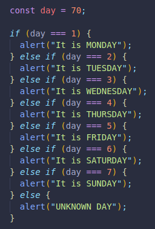
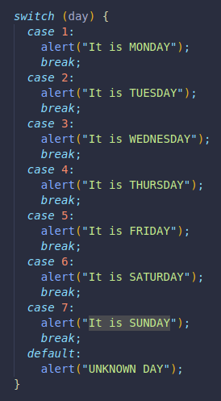
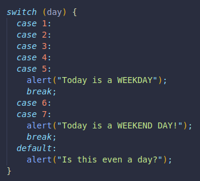

It can replace multiple if statements.
It is very important to have break; included after every case, otherwise, the code will do what the first matching case says, but also all the subsequent code, like a car without BREAKS!
Also, instead of an else statement, we use default: , which also goes inside the curly brackets.
It works just like an else, so if the entry does not match any of our cases, that is the action that will be performed.
Here is an example made with if/else if/else:
Here is the same but made with a switch statement.
We have a case for each number of day, and a default option in case none of the cases are matched. 
We can also have multiple cases do the same thing.
Here, if we enter a day number between 1 and 5, it will be considered a weekday.(Weekdays in this case being from Monday to Friday)
And a weekend day for 6 and 7.(Saturday and Sunday)
Same default as before.
